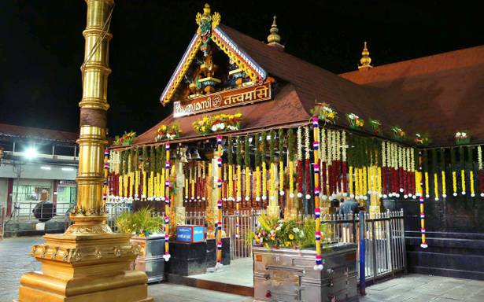
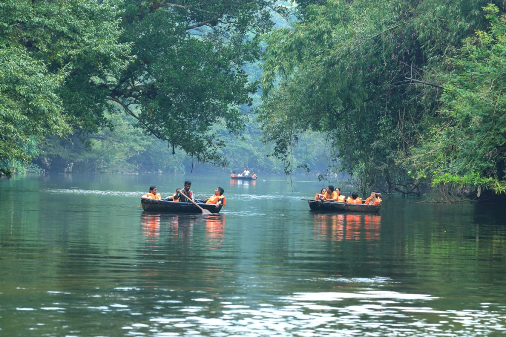

Places to visit in Pathanamthitta
Pathanamthitta is famed as the headquarters of pilgrimage in Kerala, it is a town immersed in spirituality and mysticism.Bound by bewitching sights all around, this enchanting town promises memorable experiences.
-

Gavi
Gavi is a village in Pathanamthitta district, Kerala, India. It is located 28 km southwest of Vandiperiyar, a town in Idukki on N.H 220, the highway connecting Kollam and Madurai.
-

Sabarimala
The Sabarimala Temple is a temple complex located at sabarimala inside the Periyar Tiger Reserve in the Perinad Village, Pathanamthitta district, Kerala, India. It is one of the largest annual pilgrimage sites in the world with an estimate of over 40 to 50 million devotees visiting every year.
-

konni Forest Reserve
This place is considered to be the equivalent to an elephant's cage. The reason being is that the main attraction of the region is a massive wooden cage where elephant are trained
Insteresting Fact
According to the latest World Health Organisation (WHO) study on ambient air quality among 123 Indian cities, Pathanamthitta was found to have the cleanest air in India, in terms of least concentration of dust particles in air. Two out of three least polluted cities in India are from Kerala, Kollam being second least polluted..
Contact Us
Kerala Tourism
contact@keralatourism.com
About us
Our top priority is to help you to find your perfect destination for your holiday.We focus on improving user experiecnces